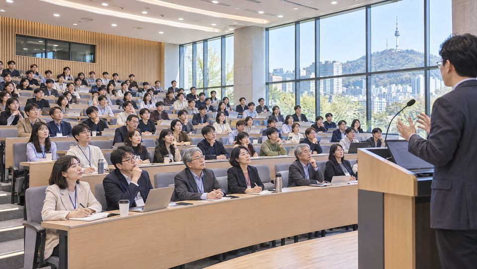

The Korean Society for Human Resource Development, since 1989
NEXT ●
—
YEARS
산·학·관·연
HRD
제22회 현장포럼
SCROLL ↓
(01) MANIFESTO — 학회소개000%
SINCE 1989.11

(02) IN NUMBERS
숫자로 읽는 KSHRD
(03) FIELD FORUM — 산업교육 현장포럼2013 → 2026
FIELD FORUMCHAPTER 22
학회가 기업 연수원으로
직접 찾아갑니다
산업교육 현장포럼은 2013년 LG CNS에서 시작했습니다. 기업의 교육 현장에서 그 회사의 인재육성 사례를 듣고 토론합니다. 2026년 11월 GS건설까지, 해외학자포럼을 포함해 스물두 번 열렸습니다.
“산업체 담당자들의 적극적인 참여를 기반으로 현장중심 학술대회, 워크숍, 세미나 등을 통해 산학협력을 제고하고자 노력하고 있습니다.”— 학회소개 중
(04) CONFERENCE THEMES
학술대회 주제로 읽는 30년
1997 — 2026
정기·연합 학술대회의 연도별 대표 주제 · HOVER TO PAUSE
(05) NEWS & PUBLICATIONS
소식 · 출판 · Events
(06) CALL FOR PAPERS · MEMBERSHIPISSN
연구는 「산업교육연구」에,
토론은 현장에서.
「」 는 발간합니다. 원고는 이메일로 학회 편집위원회에 제출합니다.
논문 투고 안내↗
입회 안내↗